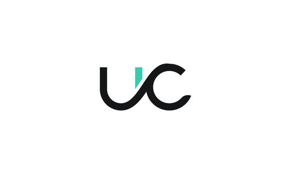
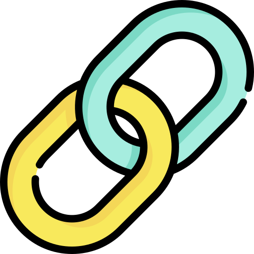

Welcome to my world
I am Dipta Chowdhury
A passionate programmer

About Me
I am a computer science student at Khulna University of Engineering & Technology. I enjoy problem solving, building creative projects, and learning innovative technologies. My goal is to bring my innovative ideas into reality and contribute to impactful projects.
Bachelor in Computer Science and Engineering (Running)
Khulna University of Engineering & Technology
Higher Secondary School Certificate (HSC)
GPA: 5.00
Chittagong College
Secondary School Certificate (SSC)
GPA: 5.00
Chittagong Collegiate School
My Skills
Technical Skills
- C
- C++
- Java
- Python
- HTML
- CSS
- JavaScript
- Firebase
- Android Studio
- Logisim (Digital Circuit Design)
Soft Skills
- Teamwork
- Communication
- Problem Solving
- Time Management
- Critical Thinking
- Collaboration
Non-Technical Skills
- English Communication
- Presentation Skills
- Academic Writing
- Quick Learning
- Attention to Detail
- Positive Attitude
My Projects
-

UniConnect App
UniConnect is a university-based social platform designed to bridge the gap between students and teachers by integrating the features of classroom activities with social networking. This platform fosters communication, collaboration, and academic productivity in an easy-to-use interface.
-

Save Links App
A useful weblink saver Android app
-
Time-Up App
Time-Up is a simple, user-friendly android app ( webview based ) that helps you organize daily tasks with deadlines. It lets you add, track, and mark tasks as completed while visually showing your overall progress. With local storage support and a clean interface, it’s perfect for managing your tasks efficiently.
-
Industry_Management_System
Time-Up is a simple, user-friendly android app ( webview based ) that helps you organize daily tasks with deadlines. It lets you add, track, and mark tasks as completed while visually showing your overall progress. With local storage support and a clean interface, it’s perfect for managing your tasks efficiently.